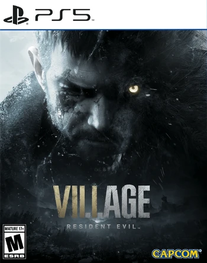
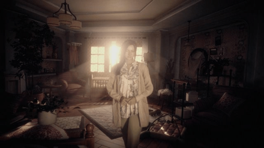
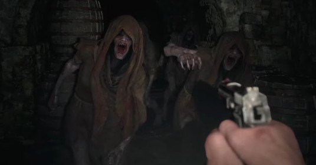

Informacje wstępne
 Resident Evil Village, nieoficjalnie znany jako Resident Evil 8, to pierwszoosobowy tytuł Survival Horror opracowany przez firmę Capcom . Został wydany 7 maja 2021 roku.
Złota edycja gry została wydana 28 października 2022 r. wraz z rozszerzeniem o nazwie "Winters", które zawiera 3 dodatkowe postacie do "The Mercenaries" , perspektywę trzeciej osoby oraz nową historię "Shadows of Rose".
Fabuła
 Akcja Resident Evil Village toczy się trzy lata po wydarzeniach z Resident Evil 7, a Ethan Winters powraca jako główny bohater. Ethan prowadzi spokojne życie z żoną Mią i córką Rosemary, przerwane przez Chrisa Redfielda, który porywa go do nieznanej wioski w Europie. Bohater musi przeszukać wioskę, aby uratować Rosemary. Wioską kierują czterej zmutowani przywódcy, każdy z nich zarządza swoim terytorium z osobnej twierdzy. Alcina Dimitrescu, wysoka arystokratka podobna do wampira, włada na zamku. Karl Heisenberg przewodzi grupie stworzeń podobnych do wilkołaków. Salvatore Moreau dowodzi kilkoma stworzeniami z jeziora sąsiadującego z wioską. Donna Beneviento zamieszkuje w rezydencji i kontroluje marionetkę o imieniu Angie. Wszystkie domy podlegają Matce Mirandzie, władczyni całej wioski, otoczonej kultem przez mieszkańców.
Rozgrywka
 Podobnie jak Resident Evil 7 z 2017 roku, Resident Evil Village przedstawiona jest z perspektywy pierwszoosobowej. System zarządzania zasobami jest podobny do tego z Resident Evil 4 (2005). Gracze mogą kupować broń i przedmioty od kupca. Mogą również polować na określone zwierzęta w wiosce i przyrządzić ich mięso. Jedzenie potraw daje pewne korzyści, takie jak zmniejszenie obrażeń zadawanych podczas blokowania.